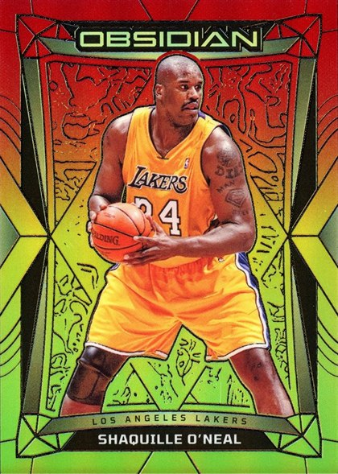
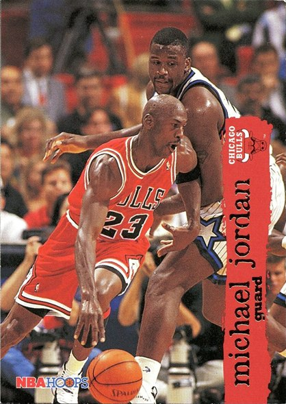
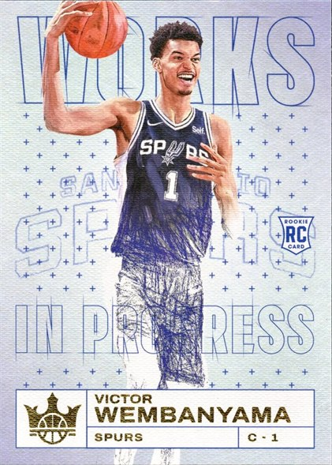
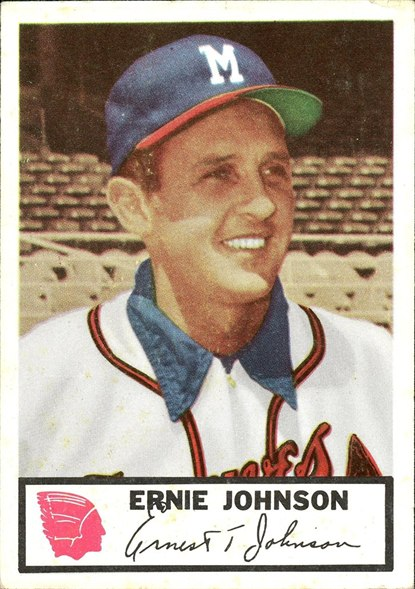
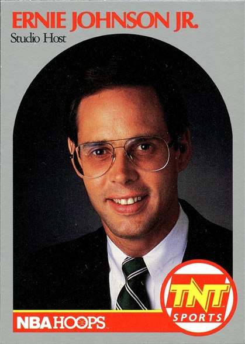

Shaq
the main event — base, inserts, internationals, graded, oddballs, cameos.
2,234 IN HAND · 12,156 CATALOGUED
STEP INSIDE
Cameos
somebody else's card. shaq stole the scene anyway.
465 CATALOGUED · 171 IN HAND
STEP INSIDE
Rookies
first-year cards of the players worth remembering.
BASKETBALL · FOOTBALL · BASEBALL
STEP INSIDE

Ernie Johnson
senior & junior — it's a family thing.
TWO GENERATIONS, ONE COLLECTION
STEP INSIDEPlayin' for Keeps is one collector's wall — the cards I chased, the cards I keep, and the ones I'm still hunting. Started with Shaq. Never really stopped.